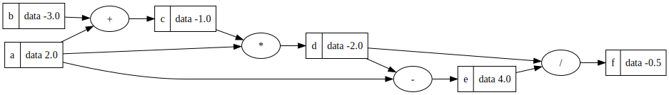
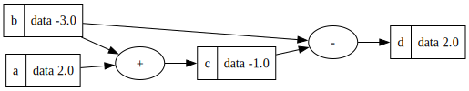

Value Class & Graph with nodes and edges exaple
Problem to be solved: We have to make a new kind of tool that can help us build a chart like this:

The actual drawing (the graphics) is done by a a tool called ‘graphviz’, and a few functions, making use of graphviz, and then imported into this notebook.
This “tool” needs some information, which in this case basically is a number (a=2.0, b=-3.0).
The usual number storing object (‘int’) can’t keep all the information we need. Besides just holding a number, we want this new tool to remember the original name of the object (a, b), what other objects helped make it (in c´s case it is a, b), and what math actions (like + or *) were used to create it. So, we need to build a new, and more complex object (or datastructure) that can remember all these things.
[3]:
# Install graphviz on you computer: https://graphviz.org/download/
# install requirement packages in this project
#%pip install graphviz
#import into this project
from graphviz import Digraph
[4]:
class Value:
def __init__(self, data, parents=(), operator='', label=''):
self.data = data # the actual value
self.prev = set(parents) # the 2 or more object used to create the object
self.op = operator # the operator used when creating the object (+,-,*,/)
self.label = label # The variable name connected to the object
def __repr__(self):
return f"Value(data={self.data})"
def __add__(self, other):
return Value(self.data + other.data, (self, other), '+')
def __mul__(self, other):
return Value(self.data * other.data, (self, other), '*')
def __sub__(self, other):
return Value(self.data - other.data, (self, other), '-')
def __truediv__(self, other):
if other.data == 0: # Division by zero check
raise ValueError("Division by zero is not allowed")
return Value(self.data / other.data, (self, other), '/')
Draw Dot Code
The following import of a functions are not super important for you to look at right now.
The function ‘draw_dot’ takes care of drawing the diagram, and expects a Value object as parameter input.
The focus in this demo should be on the Value class.
If you later look through the code step by step, you should by now (after 6 weeks with python) be able to understand what it does.
If you do not understand the code, it is a good exercise to go through the code and understand it.
The graphcode.py can be found in the code from today session.
[5]:
# These 2 functions are not super important for you to look at right now. The fokus should be on the Value class.
# But basicly what the 2 functions do are to produce the graph below with its nodes and edges.
# If you later look through the code step by step, you should by now be able to understand what it does.
# If not it is a good exercise to do so.
# In order for this to work you have to install graphviz on your laptop.
# Install graphviz on you computer: https://graphviz.org/download/
# Then install graphviz in the environment 'pip install graphviz'
from graphviz import Digraph
def trace(root):
# builds a set of all nodes and edges in a graph
nodes, edges = set(), set()
def build(v):
if v not in nodes:
nodes.add(v)
for child in v.prev:
edges.add((child, v))
build(child)
build(root)
return nodes, edges
def draw_dot(root):
dot = Digraph(format='svg', graph_attr={'rankdir': 'LR'}) # LR = left to right
nodes, edges = trace(root)
for n in nodes:
uid = str(id(n))
# for any value in the graph, create a rectangular ('record') node for it
dot.node(name=uid, label=f"{{ {n.label} | data {n.data:.1f} }}", shape='record')
if n.op:
# if this value is a result of some operation, create an op node for it
dot.node(name=uid + n.op, label=n.op)
# and connect this node to it
dot.edge(uid + n.op, uid)
for n1, n2 in edges:
# connect n1 to the op node of n2
dot.edge(str(id(n1)), str(id(n2)) + n2.op)
return dot
[8]:
a = Value(2, label='a')
b = Value(-3, label='b')
c = a + b; c.label='c'
d = c - b; d.label='d'
draw_dot(d)
[8]:

[ ]: